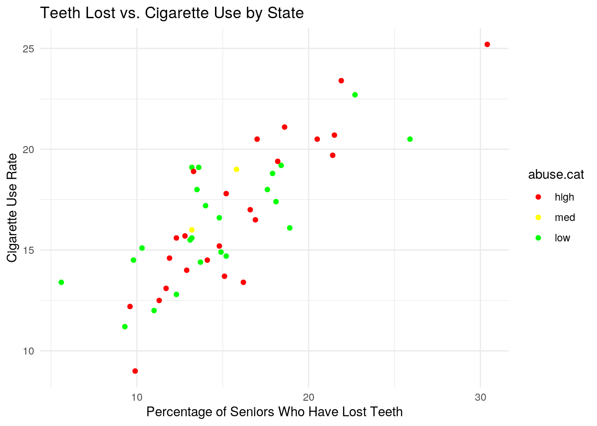

January 1, 0001
Data Wrangling and Data Exploration
Instructions
A knitted R Markdown document (ideally HTML) and the raw R Markdown file (as .Rmd) should both be submitted to Canvas by 11:59pm on 10/11/2020. These two documents will be graded jointly, so they must be consistent (i.e., don’t change the R Markdown file without also updating the knitted document).
The text of the document should provide a narrative structure around your code/output. All results presented must have corresponding code. Any answers/results/plots etc. given without the corresponding R code that generated the result will not be considered. Furthermore, all code contained in your final project document must work correctly (knit early, knit often)! Please do not include any extraneous code or code which produces error messages. (Code that produces warnings is acceptable, as long as you understand what the warnings mean!)
Find data:
Find two (!) datasets with one variable in common (e.g., dates, times, states, counties, countries, sports players), both with at least 50 observations (i.e., rows) in each. Please think very carefully about whether it makes sense to combine your datasets! If you find one dataset with 50 patients and it has their age, and you find another dataset with 50 different patients that has their ages, it makes no sense to join them based on age (you would just be pairing up random people of the same age).
When combined, the resulting/final dataset must have at least 4 different variables (at least 3 numeric) in addition to the common variable (i.e., five variables total).
You can have as many variables as you would like! If you found two datasets that you like but they don't have enough variables, find a third dataset with the same common variable and join all three.
library(tidyverse)
library(readr)
X2016_tooth_decay_Sheet1 <- read_csv("2016 tooth decay - Sheet1.csv")
library(readr)
X2016_drug_overdose_data_Sheet1 <- read_csv("2016 drug overdose data - Sheet1.csv")
library(readr)
Current_Cigarette_Use_Among_Adults_Behavior_Risk_Factor_Surveillance_System_2018 <- read_csv("Current Cigarette Use Among Adults (Behavior Risk Factor Surveillance System) 2018.csv")
cigs <- Current_Cigarette_Use_Among_Adults_Behavior_Risk_Factor_Surveillance_System_2018
drugs <- X2016_drug_overdose_data_Sheet1
teeth <- X2016_tooth_decay_Sheet1
cigs <- cigs %>% rename(cig.use.rate = Data_Value, cig.n = Sample_Size)
drugs <- drugs %>% rename(od.death.rate = `Age Adjusted Rate`,
n.deaths = `Number of Deaths`)
teeth <- teeth %>% rename(lost.teeth = `Percent of Seniors Who Have Lost Teeth`)
# renaming my data because the names are very long, renaming
# columns so they make more sense after combining the
# datasets.I chose three datasets. The teeth dataset contains the percentage of seniors (65+) who have lost some of their teeth by state. The cigs dataset contains the percentage of adults who smoke and the sample size by state. The drugs dataset contains opioid overdose death rates and the number of deaths by state. I chose these datasets because I am interested in going to dental school in the future. Cigarettes and drug use are both known to damage the health of teeth, so I chose those datasets to compare to the teeth data to see if there was a correlation between the usage of those things and the health of the teeth of seniors by state. I think that states with higher tooth loss will also tend to have higher rates of smoking and drug overdose.
Guidelines
If the datasets are not tidy, you will need to reshape them so that every observation has its own row and every variable its own column. If the datasets are both already tidy, you will make them untidy with
pivot_wider()/spread()and then tidy them again withpivot_longer/gather()to demonstrate your use of the functions. It's fine to wait until you have your descriptives to use these functions (e.g., you might want to pivot_wider() to rearrange the data to make your descriptive statistics easier to look at); it's fine long as you use them at least once!Depending on your datasets, it might be a good idea to do this before joining. For example, if you have a dataset you like with multiple measurements per year, but you want to join by year, you could average over your numeric variables to get means/year, do counts for your categoricals to get a counts/year, etc.
- If your data sets are already tidy, demonstrate the use of
pivot_longer()/gather()andpivot_wider()/spread()on all or part of your data at some point in this document (e.g., after you have generated summary statistics in part 3, make a table of them wide instead of long). Dataset was already tidy, so this will be done in part 3.
Join your 2+ separate data sources into a single dataset based on a common ID variable! If you can't find a good pair datasets to join, you may split one main dataset into two different datasets with a common ID variable in each, and then join them back together based on that common ID, but this is obviously less than ideal.
- You will document the type of join that you do (left/right/inner/full), including a discussion of how many observations were in each dataset, which observations in each dataset were dropped (if any) and why you chose this particular join.
teethanddrugs <- full_join(teeth, drugs)
fulldata <- left_join(teethanddrugs, cigs)
glimpse(fulldata)## Rows: 50
## Columns: 6
## $ Location <chr> "Alabama", "Alaska", "Arizona", "Arkansas", "California…
## $ lost.teeth <dbl> 18.4, 13.2, 12.9, 22.7, 9.3, 9.8, 9.6, 16.9, 14.1, 18.9…
## $ od.death.rate <dbl> 16.2, 16.8, 20.3, 14.0, 11.2, 16.6, 27.4, 30.8, 23.7, 1…
## $ n.deaths <dbl> 756, 128, 1382, 401, 4654, 942, 971, 282, 4728, 1394, 1…
## $ cig.use.rate <dbl> 19.2, 19.1, 14.0, 22.7, 11.2, 14.5, 12.2, 16.5, 14.5, 1…
## $ cig.n <dbl> 6347, 2698, 7758, 5177, 11118, 8188, 10276, 5011, 14589…There were 53 observations in the cigs dataset and 50 observations in both the teeth and drugs data. I did a full join for teeth and drugs because they had data for each state and it would've given me the same result regardless of which type of join I did. I did a left join to join that data with the cigs data because the cigs data had a few extra observations that I wanted to exclude, since they weren't in the other datasets. The cases that were dropped out of the cigs dataset were data collected from the U.S territories and District of Columbia. Dropping those cases should not be an issue since only 3 cases were dropped.
Create summary statistics
Use all six core
dplyrfunctions (filter, select, arrange, group_by, mutate, summarize) to manipulate and explore your dataset. For mutate, create a new variable that is a function of at least one other variable, preferably using a dplyr vector function (see dplyr cheatsheet). It's totally fine to use the_if,_at,_allversions of mutate/summarize instead (indeed, it is encouraged if you have lots of variables)Create summary statistics (
mean, sd, var, n, quantile, min, max, n_distinct, cor, etc) for each of your numeric variables both overall and after grouping by one of your categorical variables (either together or one-at-a-time; if you have two categorical variables, try to include at least one statistic based on a grouping of two categorical variables simultaneously). If you do not have any categorical variables, create one using mutate (e.g., withcase_whenorifelse) to satisfy thegroup_byrequirements above. Ideally, you will find a way to show these summary statistics in an easy-to-read table (e.g., by reshaping). (You might explore the kable package for making pretty tables!) If you have lots of numeric variables (e.g., 10+), or your categorical variables have too many categories, just pick a few (either numeric variables or categories of a categorical variable) and summarize based on those. It would be a good idea to show a correlation matrix for your numeric variables (you will need it to make one of your plots).
fulldata <- fulldata %>% na.omit
fulldata %>% filter(lost.teeth > 20) %>% arrange(desc(lost.teeth))## # A tibble: 7 x 6
## Location lost.teeth od.death.rate n.deaths cig.use.rate cig.n
## <chr> <dbl> <dbl> <dbl> <dbl> <dbl>
## 1 West Virginia 30.4 52 884 25.2 4810
## 2 Mississippi 25.9 12.1 352 20.5 5674
## 3 Arkansas 22.7 14 401 22.7 5177
## 4 Kentucky 21.9 33.5 1419 23.4 8306
## 5 Tennessee 21.5 24.5 1630 20.7 4909
## 6 Oklahoma 21.4 21.5 813 19.7 5060
## 7 Louisiana 20.5 21.8 996 20.5 4853fulldata %>% summarise_if(is.numeric, mean)## # A tibble: 1 x 5
## lost.teeth od.death.rate n.deaths cig.use.rate cig.n
## <dbl> <dbl> <dbl> <dbl> <dbl>
## 1 15.3 21.0 1271. 16.7 8272.fulldata %>% summarize_if(is.numeric, sd)## # A tibble: 1 x 5
## lost.teeth od.death.rate n.deaths cig.use.rate cig.n
## <dbl> <dbl> <dbl> <dbl> <dbl>
## 1 4.52 9.47 1285. 3.35 5080.fulldata %>% summarize_if(is.numeric, max)## # A tibble: 1 x 5
## lost.teeth od.death.rate n.deaths cig.use.rate cig.n
## <dbl> <dbl> <dbl> <dbl> <dbl>
## 1 30.4 52 4728 25.2 33879fulldata %>% summarize_if(is.numeric, min)## # A tibble: 1 x 5
## lost.teeth od.death.rate n.deaths cig.use.rate cig.n
## <dbl> <dbl> <dbl> <dbl> <dbl>
## 1 5.6 6.4 69 9 2698fulldata %>% summarize_if(is.numeric, n_distinct)## # A tibble: 1 x 5
## lost.teeth od.death.rate n.deaths cig.use.rate cig.n
## <int> <int> <int> <int> <int>
## 1 44 47 49 42 48fulldata %>% select_if(is.numeric) %>% cor()## lost.teeth od.death.rate n.deaths cig.use.rate cig.n
## lost.teeth 1.00000000 0.31049789 -0.07344044 0.8181773 -0.30835903
## od.death.rate 0.31049789 1.00000000 0.27355990 0.2096280 -0.09268676
## n.deaths -0.07344044 0.27355990 1.00000000 -0.1773431 0.40688481
## cig.use.rate 0.81817733 0.20962800 -0.17734312 1.0000000 -0.35522514
## cig.n -0.30835903 -0.09268676 0.40688481 -0.3552251 1.00000000fulldata <- fulldata %>% mutate(abuse.cat = ifelse(od.death.rate >
20, "high", ifelse(od.death.rate <= 20 & od.death.rate <=
10, "med", "low")))
fulldata %>% group_by(abuse.cat, Location) %>% summarize(drugs.n = (1/od.death.rate) *
n.deaths)## # A tibble: 49 x 3
## # Groups: abuse.cat [3]
## abuse.cat Location drugs.n
## <chr> <chr> <dbl>
## 1 high Arizona 68.1
## 2 high Connecticut 35.4
## 3 high Delaware 9.16
## 4 high Florida 199.
## 5 high Indiana 63.6
## 6 high Kentucky 42.4
## 7 high Louisiana 45.7
## 8 high Maine 12.3
## 9 high Maryland 61.6
## 10 high Massachusetts 67.5
## # … with 39 more rows# drugs.n gives the total number of overdoses in the sample,
# including those that did not result in death
fulldata %>% group_by(abuse.cat) %>% summarize(mean_od = mean(od.death.rate),
mean_smoke = mean(cig.use.rate), mean_lost_teeth = mean(lost.teeth)) %>%
pivot_longer(contains("_")) %>% separate(name, into = c("function",
"type")) %>% pivot_wider(names_from = type, values_from = value)## # A tibble: 3 x 5
## abuse.cat `function` od smoke lost
## <chr> <chr> <dbl> <dbl> <dbl>
## 1 high mean 28.5 16.8 16.0
## 2 low mean 14.4 16.4 14.7
## 3 med mean 7.4 17.5 14.5The first thing I did was omit any NAs so that none of my summary statistics would be messed up. Then, I filtered the rows with more than 20% lost teeth and arranged them to see the states with the largest percentage of seniors who have lost teeth. After that, I used summarize if to find the mean, standard deviation, minimum, maximum, and number of distinct values for each column. Then, I mutated by data to add a new column, abuse.cat. abuse.cat sorts each state into categories "high", "med", and "low" based on the drug overdose rates. I used this new column and summarize to find drugs.n, which is the total number of overdoses in the sample. I grouped by the abuse category to calculate the mean of overdoses, smokers, and teeth lost. I used pivot longer and pivot wider to tidy the data up. The data wasn't really untidy in the first place sinse all of the statistics were means, but the names of each column are a little cleaner since they don't have "mean_" in front of them anymore. Instead, the mean is in its own column called function. First I used pivot_longer on the numeric columns, then I separated them by the name to separate the type of summary statistic (mean) and the data that the mean function was performed on. Afterwards, I used pivot_wider to make the overdoses, smokers, and teeth lost back into column names.
Make visualizations (three plots)
- Make a correlation heatmap of your numeric variables
- Create at least two additional plots of your choice with ggplot that highlight some of the more interesting features of your data.
- Each plot (besides the heatmap) should have at least three variables mapped to separate aesthetics
- Each should use different geoms (don't do two geom_bars)
- At least one plot should include
stat="summary" - Each plot should include a supporting paragraph describing the relationships that are being visualized and any trends that are apparent
- It is fine to include more, but limit yourself to 4. Plots should avoid being redundant! Four bad plots will get a lower grade than two good plots, all else being equal.
- Make them pretty! Use correct labels, etc.
library(ggplot2)
cormat <- fulldata %>% select_if(is.numeric) %>% cor(use = "pair")
tidycor <- cormat %>% as.data.frame %>% rownames_to_column("var1") %>%
pivot_longer(-1, names_to = "var2", values_to = "correlation")
tidycor %>% ggplot(aes(var1, var2, fill = correlation)) + geom_tile() +
scale_fill_gradient2(low = "red", mid = "white", high = "blue") +
geom_text(aes(label = round(correlation, 2)), color = "black",
size = 4) + theme(axis.text.x = element_text(angle = 90,
hjust = 1)) + coord_fixed() + ggtitle("Correlation Heatmap") The correlation heatmap shows a strong correlation between lost teeth and cigarette use rate. All other rates are much lower. n.deaths and cig.n have the next highest correlation, but the relationship between them makes less sense because n.cigs is a sample size for the cigarette data and has little to do with the number of deaths from opioid overdose.
The correlation heatmap shows a strong correlation between lost teeth and cigarette use rate. All other rates are much lower. n.deaths and cig.n have the next highest correlation, but the relationship between them makes less sense because n.cigs is a sample size for the cigarette data and has little to do with the number of deaths from opioid overdose.
ggplot(data = fulldata, aes(x = lost.teeth, y = cig.use.rate,
color = abuse.cat)) + geom_point() + theme_minimal() + ggtitle("Teeth Lost vs. Cigarette Use by State") +
xlab("Percentage of Seniors Who Have Lost Teeth") + ylab("Cigarette Use Rate") +
scale_color_manual(breaks = c("high", "med", "low"), values = c("red",
"yellow", "green")) Since the correlation heatmap showed that lost.teeth and cig.use.rate had a strong correlation, I wanted to see a scatterplot of the two. I colored the points by abuse.cat to incorporate the drug data into this plot as well. This plot confirms that there is a strong correlation between the two variables because you can easily see an upward linear trend.
fulldata <- fulldata %>% mutate(smoke.cat = ifelse(cig.use.rate >
20, "high smoke", ifelse(cig.use.rate <= 20 & cig.use.rate <=
10, "med smoke", "low smoke")))
ggplot(fulldata, aes(x = abuse.cat, y = od.death.rate, fill = abuse.cat)) +
geom_bar(stat = "summary") + geom_errorbar(stat = "summary",
width = 0.5) + theme_dark() + scale_fill_brewer() + facet_wrap(~smoke.cat) +
scale_y_continuous(name = "Overdose Death Rate") + scale_x_discrete("Abuse Catergory") +
ggtitle("Overdose Death Rate Breakdown") For the bar graphs, I mutated a new categorical column in my data called smoke.cat. smoke.cat is the same as abuse.cat, but instead of being based on drug overdose rates, it is based on cigarette smoking rates. I made this new column to facet wrap my bar graph (so that I could incorporate 3 variables) without having to facet wrap it by state. It would have been too overwhelming to do it by state and it would be really hard to read that way. These bar graphs show the overdose death rates for each abuse category, while being separated by high, medium, and low smoking rates.
For the bar graphs, I mutated a new categorical column in my data called smoke.cat. smoke.cat is the same as abuse.cat, but instead of being based on drug overdose rates, it is based on cigarette smoking rates. I made this new column to facet wrap my bar graph (so that I could incorporate 3 variables) without having to facet wrap it by state. It would have been too overwhelming to do it by state and it would be really hard to read that way. These bar graphs show the overdose death rates for each abuse category, while being separated by high, medium, and low smoking rates.
Perform k-means/PAM clustering or PCA on (at least) your numeric variables.
Include all steps as we discuss in class, including a visualization.
If you don't have at least 3 numeric variables, or you want to cluster based on categorical variables too, convert them to factors in R, generate Gower's dissimilarity matrix on the data, and do PAM clustering on the dissimilarities.
Show how you chose the final number of clusters/principal components
Interpret the final clusters/principal components
For every step, document what your code does (in words) and what you see in the data!
library(cluster)
pam_dat <- fulldata %>% select(lost.teeth, od.death.rate, n.deaths,
cig.use.rate, cig.n)
sil_width <- vector()
for (i in 2:10) {
pam_fit <- pam(pam_dat, k = i)
sil_width[i] <- pam_fit$silinfo$avg.width
}
ggplot() + geom_line(aes(x = 1:10, y = sil_width)) + scale_x_continuous(name = "k",
breaks = 1:10)pam1 <- fulldata %>% select_if(is.numeric) %>% scale %>% pam(k = 3)
pam1## Medoids:
## ID lost.teeth od.death.rate n.deaths cig.use.rate cig.n
## [1,] 18 1.1478773 0.08472778 -0.21414552 1.14833776 -0.6731827
## [2,] 15 -0.1123512 -1.09844282 -0.74483259 -0.01583914 0.1121174
## [3,] 3 -0.5324274 -0.07373257 0.08621402 -0.79195707 -0.1012858
## Clustering vector:
## [1] 1 2 3 1 3 3 3 1 3 2 3 2 3 1 2 2 1 1 3 3 3 3 2 1 1 2 2 3 3 3 3 3 1 2 1 1 2 3
## [39] 3 2 2 1 3 3 3 3 3 1 1
## Objective function:
## build swap
## 1.580227 1.515019
##
## Available components:
## [1] "medoids" "id.med" "clustering" "objective" "isolation"
## [6] "clusinfo" "silinfo" "diss" "call" "data"For this code, I made a plot to figure out the number of clusters to use for PAM. 3 has the highest sil_width, so 3 is best choice for the number of clusters. I did PAM in this section of the code as well.
eig1 <- fulldata %>% select_if(is.numeric) %>% cor() %>% eigen()
x <- fulldata %>% select_if(is.numeric) %>% scale
PCAscores <- x %*% eig1$vectors
fulldata %>% mutate(PC1 = PCAscores[, 1], PC2 = PCAscores[, 2]) %>%
ggplot(aes(PC1, PC2, color = pam1$clustering)) + geom_point() I made eigenvectors for the data to do PCA. I made a matrix of the numeric data in my fulldataset and multiplied it with the eigenvectors. I made a plot to visualize my clusters, and colored them by the pam clusters.
I made eigenvectors for the data to do PCA. I made a matrix of the numeric data in my fulldataset and multiplied it with the eigenvectors. I made a plot to visualize my clusters, and colored them by the pam clusters.
plot(pam1, which = 2)
Rubric
Prerequisite: Finding appropriate data from at least two sources per the instructions above: Failure to do this will result in a 0! You will submit a .Rmd file and a knitted document (pdf).
0. Introduction (4 pts)
- Write a narrative introductory paragraph or two describing the datasets you have chosen, the variables they contain, how they were acquired, and why they are interesting to you. Expand on potential associations you may expect, if any.
1. Tidying: Rearranging Wide/Long (8 pts)
- Tidy the datasets (using the
tidyrfunctionspivot_longer/gatherand/orpivot_wider/spread) - If you data sets are already tidy, be sure to use those functions somewhere else in your project
- Document the process (describe in words what was done per the instructions)
2. Joining/Merging (8 pts)
- Join your datasets into one using a
dplyrjoin function - If you have multiple observations on the joining variable in either dataset, fix this by collapsing via summarize
- Discuss the process in words, including why you chose the join you did
- Discuss which cases were dropped, if any, and potential problems with this
3. Wrangling (40 pts)
- Use all six core
dplyrfunctions in the service of generating summary statistics (18 pts)- Use mutate at least once to generate a variable that is a function of at least one other variable
- Compute at least 10 summary statistics for using summarize and summarize with group_by (18 pts)
- Use at least 5 unique functions inside of summarize (e.g., mean, sd)
- At least 2 of these should group by a categorical variable. Create one by dichotomizing a numeric if necessary
- If applicable, at least 1 of these should group by two categorical variables
- Strongly encouraged to create a correlation matrix with
cor()on your numeric variables
- Summarize/discuss all results in no more than two paragraphs (4 pts)
4. Visualizing (30 pts)
Create a correlation heatmap of your numeric variables
Create two effective, polished plots with ggplot
- Each plot should map 3+ variables to aesthetics
- Each plot should have a title and clean labeling for all mappings
- Change at least one default theme element and color for at least one mapping per plot
- For at least one plot, add more tick marks (x, y, or both) than are given by default
- For at least one plot, use the stat="summary" function
- Supporting paragraph or two (for each plot) describing the relationships/trends that are apparent
5. Dimensionality Reduction (20 pts)
Either k-means/PAM clustering or PCA (inclusive "or") should be performed on at least three numeric variables in your dataset
- All relevant steps discussed in class
- A visualization of the clusters or the first few principal components (using ggplot2)
- Supporting paragraph or two describing results found
6. Neatness!
- Your project should not knit to more than 30 or so pages (probably closer to 10)! You will lose points if you print out your entire dataset(s), have terrible formatting, etc. If you start your project in a fresh .Rmd file, you are advised to paste the set-up code from this document (lines 14-17) at the top of it: this will automatically truncate if you accidentally print out a huge dataset, etc. Imagine this is a polished report you are giving to your PI or boss to summarize your work researching a topic.
Where do I find data?
OK, brace yourself!
You can choose ANY datasets you want that meet the above criteria for variables and observations. I'm just sitting here but off the top of my head, if you are into amusement parks, you could look at amusement-park variables, including ticket sales per day etc.; then you could join this by date in weather data. If you are interested in Game of Thrones, you could look at how the frequency of mentions of character names (plus other character variables) and the frequency of baby names in the USA...You could even take your old Biostats data and merge in new data (e.g., based on a Google forms timestamp).
You could engage in some "me-search": You can request your Spotify data or download Netflix viewing activity, Amazon purchase history, etc. You can use your Google Fit/Fitbit/Apple watch data, etc. These can be combined (e.g., with each other, with other data sources).
You can make it as serious as you want, or not, but keep in mind that you will be incorporating this project into a portfolio webpage for your final in this course, so choose something that really reflects who you are, or something that you feel will advance you in the direction you hope to move career-wise, or something that you think is really neat. On the flip side, regardless of what you pick, you will be performing all the same tasks, so it doesn't end up being that big of a deal.
If you are totally clueless and have no direction at all, log into the server and type
data(package = .packages(all.available = TRUE))This will print out a list of ALL datasets in ALL packages installed on the server (a ton)! Scroll until your eyes bleed! Actually, do not scroll that much... To start with something more manageable, just run the command on your own computer, or just run data() to bring up the datasets in your current environment. To read more about a dataset, do ?packagename::datasetname.
If it is easier for you, and in case you don't have many packages installed, a list of R datasets from a few common packages (also downloadable in CSV format) is given at the following website: https://vincentarelbundock.github.io/Rdatasets/datasets.html (including types/numbers of variables in each)
A good package to download for fun/relevant data is
fivethiryeight. Just runinstall.packages("fivethirtyeight"), load the packages withlibrary(fivethirtyeight), rundata()`, and then scroll down to view the datasets. Here is an online list of all 127 datasets (with links to the 538 articles). Lots of sports, politics, current events, etc: https://cran.r-project.org/web/packages/fivethirtyeight/vignettes/fivethirtyeight.htmlIf you have already started to specialize (e.g., ecology, epidemiology) you might look at discipline-specific R packages (vegan, epi, respectively). We will be using some tools from these packages later in the course, but they come with lots of data too, which you can explore according to the directions above
However, you emphatically DO NOT have to use datasets available via R packages! In fact, I would much prefer it if you found the data from completely separate sources and brought them together (a much more realistic experience in the real world)! You can even reuse data from your SDS328M project, provided it shares a variable in common with other data which allows you to merge the two together (e.g., if you still had the timestamp, you could look up the weather that day: https://www.wunderground.com/history/). If you work in a research lab or have access to old data, you could potentially merge it with new data from your lab!
Here is a curated list of interesting datasets (read-only spreadsheet format): https://docs.google.com/spreadsheets/d/1wZhPLMCHKJvwOkP4juclhjFgqIY8fQFMemwKL2c64vk/edit
Here is another great compilation of datasets: https://github.com/rfordatascience/tidytuesday
Here is the UCI Machine Learning Repository: https://archive.ics.uci.edu/ml/index.php
Here is another good general place to look: https://www.kaggle.com/datasets
To help narrow your search down or to see interesting variable ideas, check out https://www.tylervigen.com/spurious-correlations. This is the spurious correlations website, and it is fun, but if you look at the bottom of each plot you will see sources for the data. This is a good place to find very general data (or at least get a sense of where you can scrape data together from)!
If you are interested in medical data, check out www.countyhealthrankings.org
If you are interested in scraping UT data, the university makes loads of data public (e.g., beyond just professor CVs and syllabi). Check out all the data that is available in the statistical handbooks: https://reports.utexas.edu/statistical-handbook
Broader data sources:
Data.gov 186,000+ datasets!
Social Explorer is a nice interface to Census and American Community Survey data (more user-friendly than the government sites). May need to sign up for a free trial.
U.S. Bureau of Labor Statistics
Gapminder, data about the world.
...